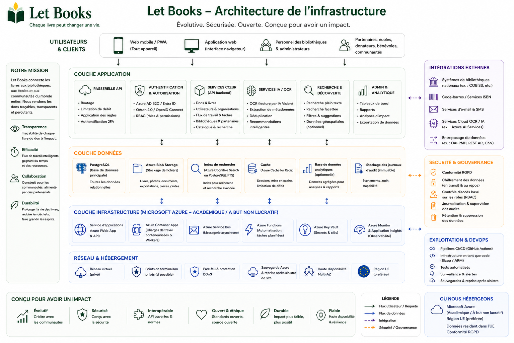

Les exemples d'hébergement et de gouvernance décrivent la direction de l'architecture et des règles, mais ne signifient pas des implémentations certifiées ou des responsabilités de production existantes.
Guide pour les administrateurs
Alignez l'accès, la confidentialité et la logistique dès le départ.
Let Books doit être utile à un donateur privé, à une association ou à un futur hôte institutionnel. Les administrateurs ont donc besoin de règles claires sur les utilisateurs, tenants, rôles, lieux et usage optionnel de l'IA.

Ce que gèrent les administrateurs
- Accès approuvés et appartenances
- Tenants et rôles
- Structure des emplacements et flux de dons
- Limites de confidentialité et audit
- Paramètres optionnels d'IA, d'OCR et de traduction
Ce qu'il faut éviter
- Un accès fondé uniquement sur une connexion externe
- Divulguer publiquement des lieux de stockage précis
- Rendre l'IA payante obligatoire dans les flux principaux
- Mélanger exemplaire physique et métadonnées pures
Modèle d'accès
L'authentification peut venir de fournisseurs externes d'identité, mais l'autorisation doit rester sous le contrôle de l'application.
Connexions approuvées
Les implémentations initiales ou privées doivent limiter l'accès aux utilisateurs approuvés à l'avance.
Appartenances aux tenants
Le même utilisateur peut participer à plusieurs tenants avec des rôles différents.
Visibilité par rôle
Les relecteurs ne doivent pas voir automatiquement les notes privées ou les détails du domicile du donateur.
Confidentialité et gouvernance
Les lieux exacts, notes privées et coordonnées doivent rester limités. Les exports, imports, changements de rôles et futures demandes d'IA doivent être consignés.
Orientation de l'implémentation
La plateforme doit fonctionner pour une implémentation privée, tout en restant ouverte à un hébergement institutionnel ou auto-hébergé plus tard, avec un stockage indépendant du fournisseur.
Exemple : Une association utilise Let Books pour plusieurs donateurs locaux et bibliothèques partenaires. Un administrateur approuve les accès, chaque donateur a son propre tenant et l'OCR reste désactivé jusqu'à l'existence d'un budget dédié.